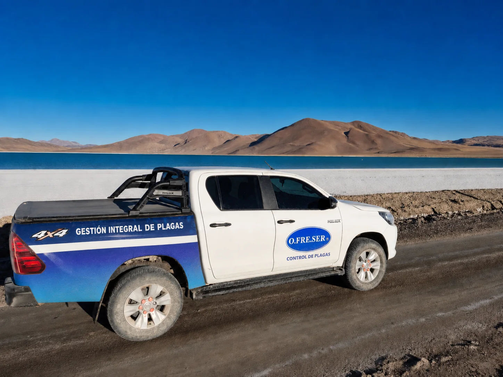
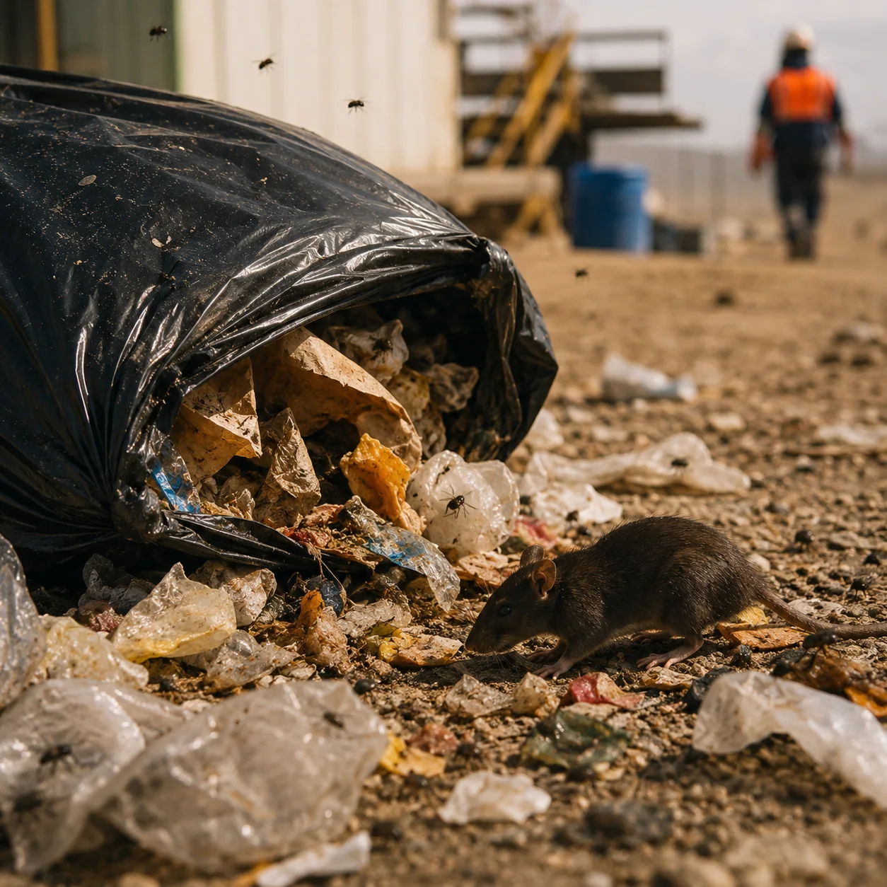
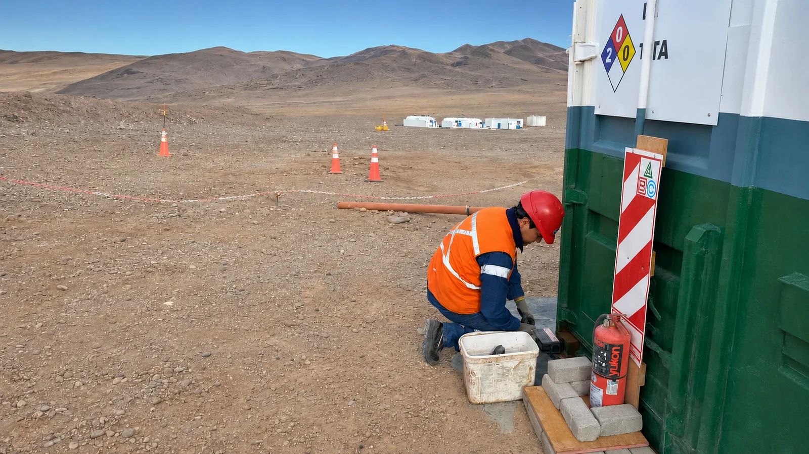
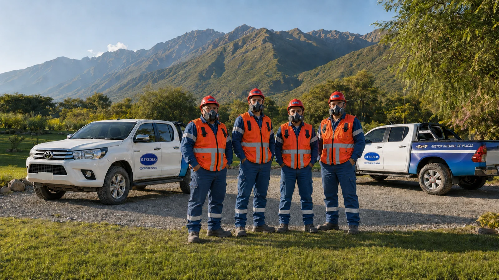
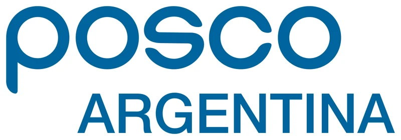
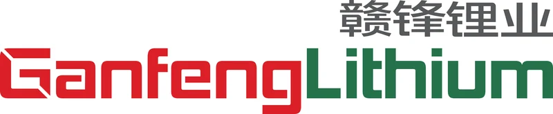
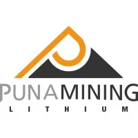
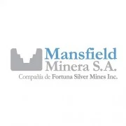
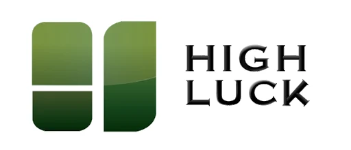

Gestión del riesgo biológico para operaciones mineras.
Programas de Manejo Integrado de Plagas para campamentos e instalaciones donde la continuidad operativa, la salud, la infraestructura y el ambiente forman parte del mismo problema.

Las plagas no son el problema. Son el síntoma.
Cuando falla el control, el riesgo puede dejar de ser una molestia y afectar personas, operación, infraestructura y ambiente.

Salud
Contaminación, picaduras y exposición.

Operación
Paradas, incidentes, desvíos y pérdida de condiciones higiénicas.

Infraestructura
Cableado, tableros, depósitos y equipos críticos.

Ambiente
Residuos, fauna, atracción de especies y cumplimiento.
Un campamento puede convertirse en un oasis para la fauna.
Las condiciones creadas por la propia operación pueden aportar tres recursos básicos:
Tres factores que hay que gestionar.
El programa efectivo no empieza preguntando qué producto aplicar, sino entendiendo por qué existe la presión de plagas.
El campamento crea un oasis
Agua, alimento y refugio pueden atraer fauna y sostener actividad.
La operación mueve especies
Vehículos, pallets, alimentos y equipos pueden introducir organismos en nuevos sectores.
Los hábitos definen el riesgo
Residuos, orden, limpieza, exclusión y mantenimiento modifican la exposición.
Del control de plagas a la gestión del riesgo.
El proceso se apoya en prevención basada en riesgo, monitoreo, trazabilidad y mejora continua.
Identificar
Especies, fuentes, accesos y puntos críticos.
Evaluar
Actividad, exposición y consecuencias.
Prevenir
Reducir condiciones favorables y vías de ingreso.
Monitorear
Dispositivos, registros, hallazgos y tendencias.
Mejorar
Ajustar el programa según evidencia objetiva.

Monitoreo que permite decidir.
La detección de actividad, el estado de los dispositivos, las condiciones del entorno y los hallazgos quedan integrados al seguimiento del programa.
La prevención también protege el entorno.
En ambientes sensibles, una estrategia preventiva ayuda a reducir atracción de fauna, desvíos de residuos y respuestas reactivas innecesarias. O.FRE.SER trabaja con un Sistema de Gestión Ambiental certificado IRAM-ISO 14001:2015.

Organizaciones que confían en O.FRE.SER.





Logos incluidos con fines de mockup a partir del material provisto por O.FRE.SER.